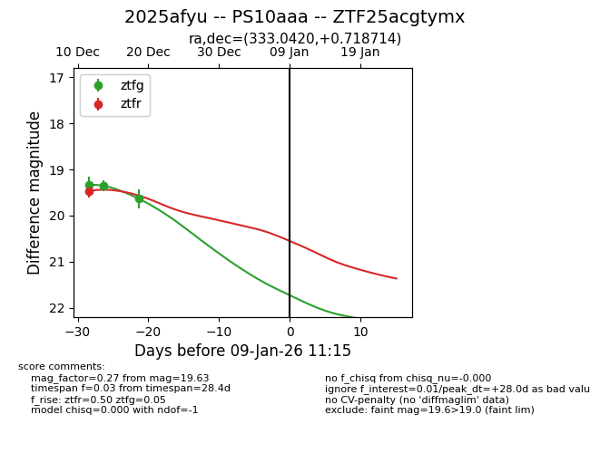
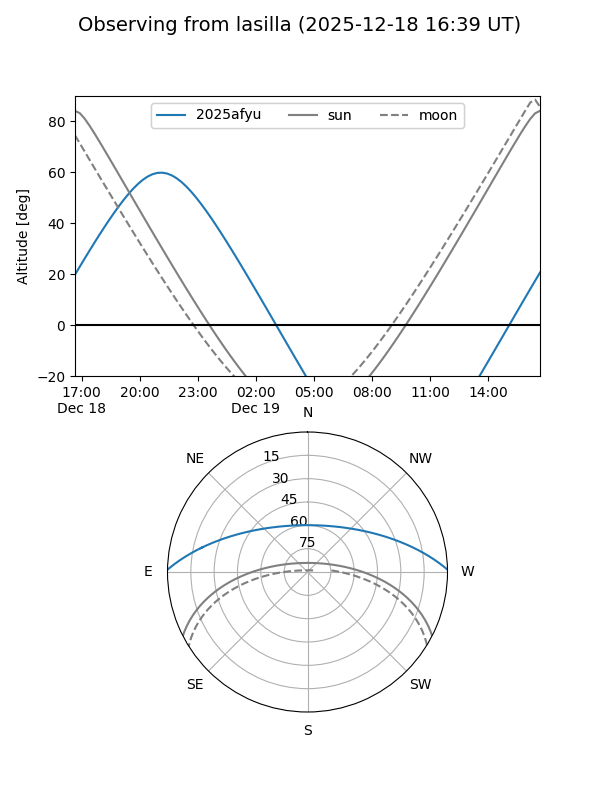
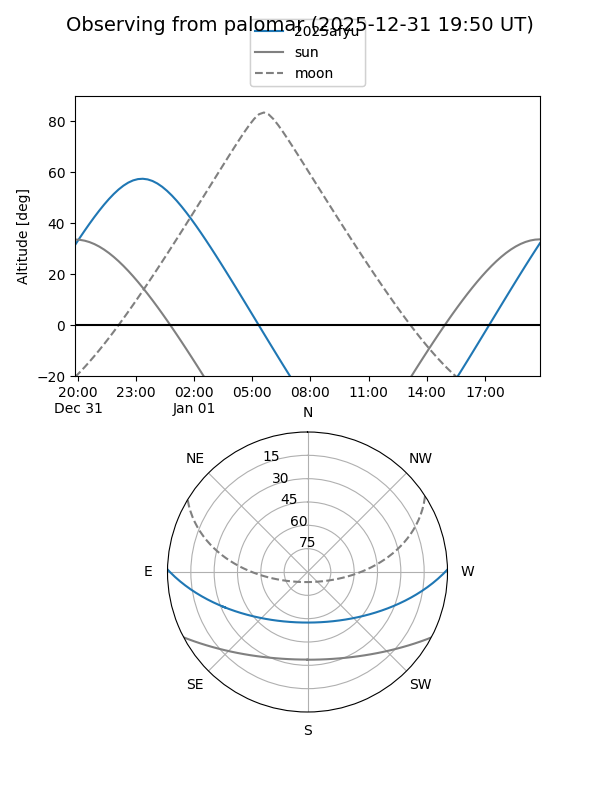

2025afyu
Target 2025afyu at 2025-12-18 11:18
Aliases and brokers:
FINK: fink-portal.org/ZTF25acgtymx
Lasair: lasair-ztf.lsst.ac.uk/objects/ZTF25acgtymx
ALeRCE: alerce.online/object/ZTF25acgtymx
TNS: wis-tns.org/object/2025afyu
YSE: ziggy.ucolick.org/yse/transient_detail/2025afyu
alt names
ZTF25acgtymx (ztf,fink_ztf)
2025afyu (tns,yse)
PS10aaa (panstarrs)
Coordinates:
equatorial (ra, dec) = 333.0420,+0.71871
equatorial (HMS+DMS) = 22:12:10.08,+00:43:07.37
galactic (l, b) = (62.3717,-42.67322)
Photometry
last ztfg=19.35, ztfr=19.46
2 ztfg, 1 ztfr detections
Lightcurve

Visibility


Additional plots